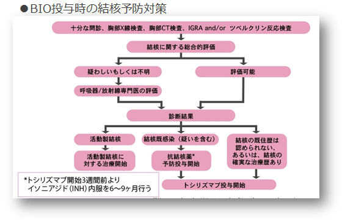

結核
結核併発のリスク
結核の既往歴・家族歴、陳旧性結核の画像所見、ツベルクリン反応強陽性、クォンティフェロンTB陽性、T-SPOT.TB陽性など
結核が疑われたときの初期対応
通常の結核症（一般人）：肺結核が9割、初発症状として咳、痰、微熱、倦怠感が約2週間持続
生物学的製剤投与下における結核症：肺外結核（粟粒結核、胸膜炎、リンパ節結核）が約半数を占める。初発症状は高熱、胸痛、腹痛、リンパ節腫脹など。
診断
胸部X線、CT検査、結核菌の同定、ツベルクリン反応、クオンティフェロン検査、T-SPOT.TB検査

治療
一般人の結核治療と同様、RFP＋INH＋PZA にSM（またはEB）の4 剤併用で2 カ月間治療後、RFP＋INH で4 カ月間治療
結核治療中のRA治療
MTXは発熱期間中は中止、ステロイドは継続（むしろ増量）、生物学的製剤は一旦中止し、paradoxical reaction※が認められたらまず十分量のステロイドで対処、結核治療終了後は生物学的製剤の再開は可能
※paradoxical reactionを疑う現象：肺陰影の憎悪、空洞化、胸水出現、リンパ節腫大
結核発症の予防
BIO使用開始前に、結核のスクリーニングを行うことが必須。活動性結核と判定されたら結核の標準治療を行い、結核を疑う所見が認められたら潜在性結核感染者としてTCZ開始3週間前よりINH内服、その後も継続して併用投与。
生物学的製剤と呼吸器疾患診療の手引き（日本呼吸器学会）より